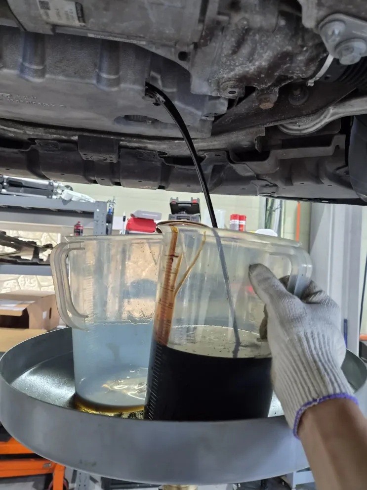
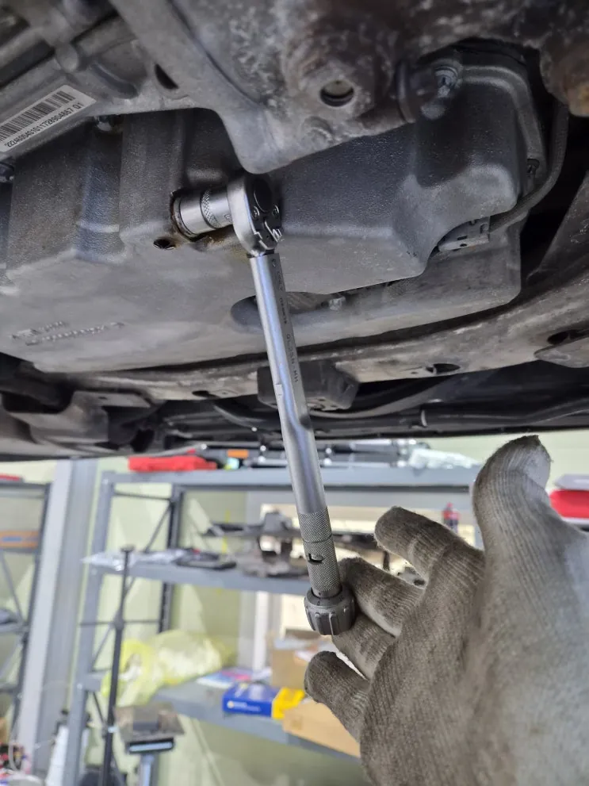
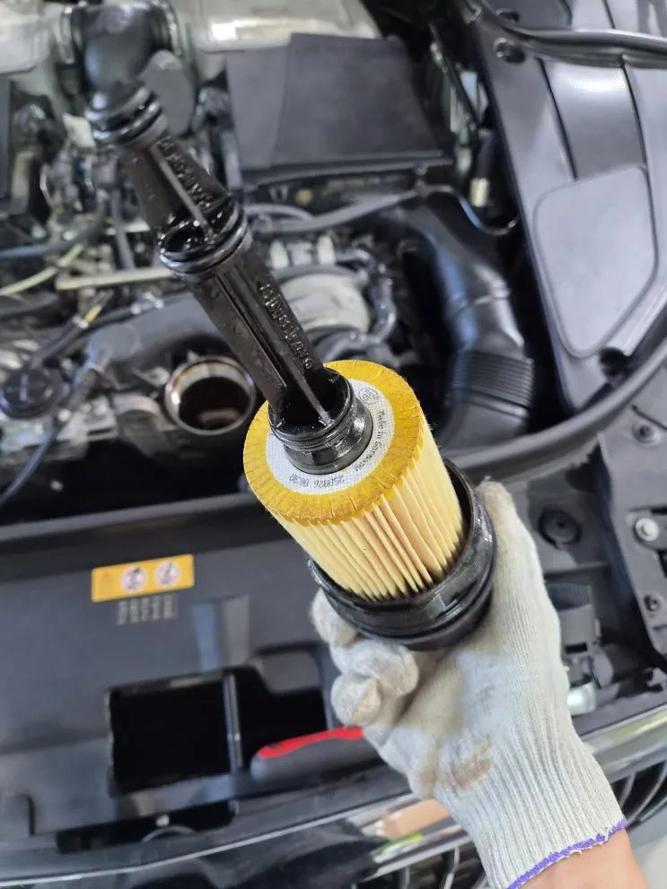
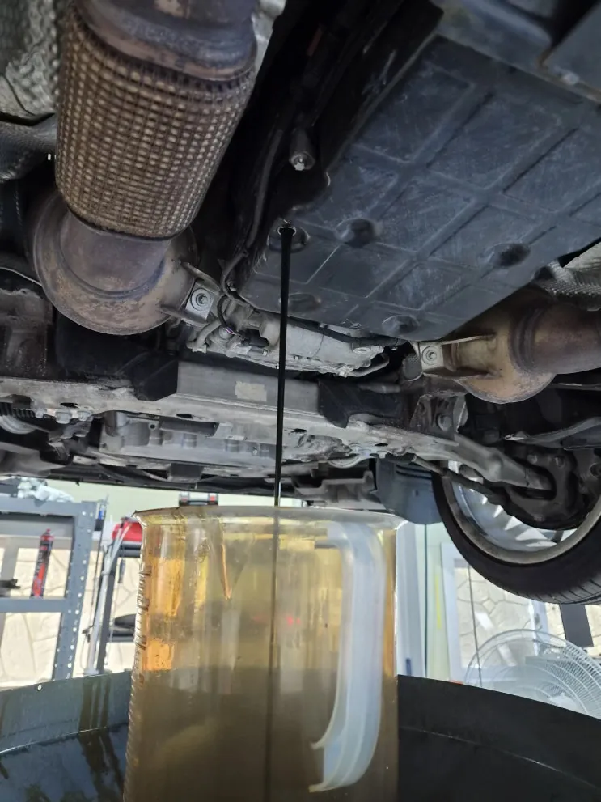
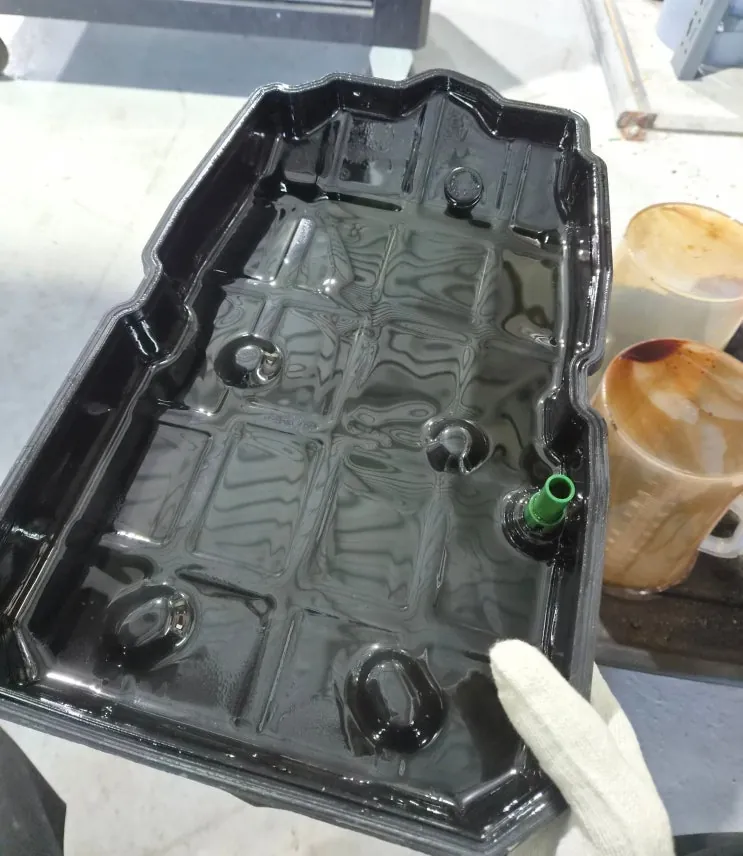
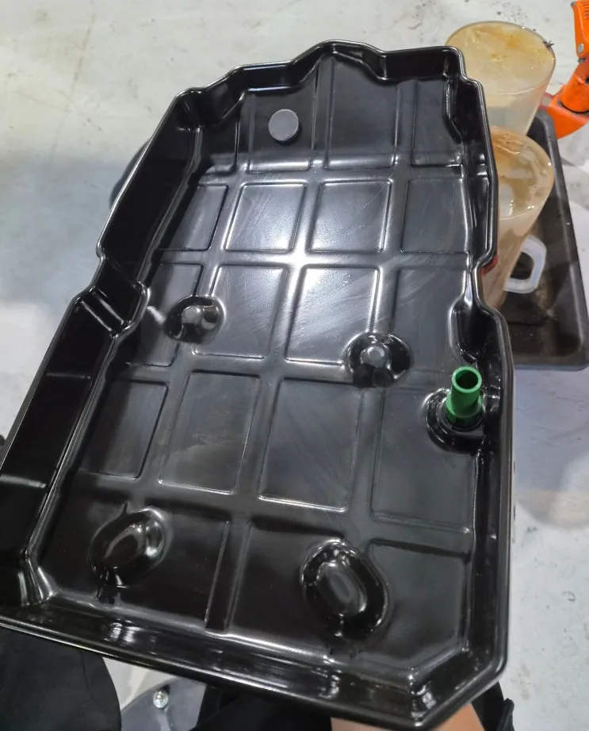
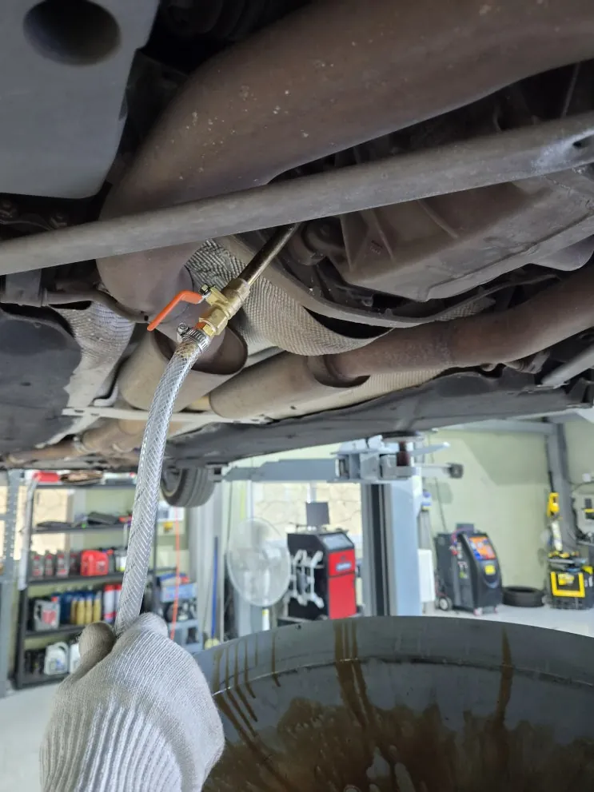

마이바흐 V12 엔진오일·미션오일·디퍼런셜오일 교환
한눈에 보기
V12 엔진을 얹은 메르세데스-마이바흐의 엔진오일(오일필터 포함), 미션오일, 디퍼런셜오일 세 가지를 교환했습니다. 디퍼런셜오일은 엔진오일·미션오일보다 관리에서 빠지기 쉬운 항목이라 함께 점검하는 것이 좋습니다.
- 차량
- 메르세데스-마이바흐 V12 세단
- 증상
- 정기 오일 교환
- 작업
- 엔진오일 교환
- 오일필터 교환
- 미션오일 교환
- 디퍼런셜오일 교환
- 교환 후 점검
- 작업장
- 그릿서비스 · 경기도 파주시 교하로 1312-53, 1동 1층

입고 내용
V12 엔진을 얹은 메르세데스-마이바흐가 입고되어 엔진오일, 미션오일, 디퍼런셜오일 세 가지를 교환했습니다. 엔진오일을 바꾸면서 오일필터도 함께 새것으로 바꿨습니다.
실린더가 열두 개인 V12 엔진은 그만큼 오일이 돌며 지켜야 할 부위가 넓습니다. 차체가 크고 무거운 대형 세단이라 변속기와 구동계가 받는 부담도 큰 편입니다. 이런 차일수록 규격에 맞는 오일을 고르고, 정해진 순서와 체결 토크를 지키고, 교환 후 상태를 확인하는 과정이 중요합니다.


엔진오일과 오일필터
엔진오일은 엔진 안에서 움직이는 금속 부품끼리 직접 닿지 않게 막아 주는 윤활, 연소열을 나눠 식히는 냉각, 엔진 안의 찌꺼기를 붙잡아 옮기는 세정 역할을 합니다.
오일은 엔진 안을 돌면서 금속 마모 가루나 카본 찌꺼기를 함께 실어 나르고, 오일필터는 이 오염물을 걸러 깨끗한 오일이 다시 엔진으로 들어가게 합니다. 필터에 오염물이 쌓이면 거르는 힘이 떨어지고, 막히면 오일 순환이 원활하지 않을 수 있습니다. 새 오일을 넣으면서 쓰던 필터를 그대로 두면 교환 효과가 줄어들기 때문에 필터를 같이 바꿨습니다.


미션오일
미션오일(자동변속기 오일)은 변속기 안의 기어와 클러치를 윤활하고, 변속할 때 유압을 전달하는 매개체가 되며, 변속기 안의 열을 식힙니다. 변속이 부드럽고 동력이 안정적으로 전달되도록 돕는 오일입니다.
무거운 대형 세단은 변속기에 걸리는 부담이 크므로 주행 거리와 사용 환경에 맞춰 오일 상태를 점검하고 교환 시기를 관리하는 것이 좋습니다.


디퍼런셜오일
디퍼런셜(차동기어)은 변속기에서 받은 동력을 좌우 바퀴로 나눠 보내는 장치입니다. 코너를 돌 때 안쪽 바퀴와 바깥쪽 바퀴는 도는 속도가 다른데, 디퍼런셜이 이 차이를 조절해 차가 안정적으로 돌아 나가게 합니다.
디퍼런셜오일은 이 안의 기어를 윤활하고 마찰열과 마모를 줄입니다. 엔진오일이나 미션오일에 비해 관리 항목에서 빠지기 쉽지만, 동력이 바퀴로 가는 마지막 단계를 맡는 부품이라 함께 점검하는 것이 좋습니다.
세 가지 오일을 교환한 뒤 교환 부위 상태를 점검하고 출고했습니다.

자주 묻는 질문
엔진오일을 바꿀 때 오일필터도 꼭 바꿔야 하나요?
쓰던 필터에는 오염물이 쌓여 있어 새 오일을 넣어도 교환 효과가 줄어들 수 있습니다. 그래서 엔진오일을 교환할 때 오일필터도 함께 바꾸는 것이 일반적입니다.
디퍼런셜오일은 무엇인가요?
좌우 바퀴의 회전 차이를 조절하는 차동기어 안의 기어를 윤활하는 오일입니다. 엔진오일·미션오일보다 관리에서 빠지기 쉬워 함께 점검하는 것이 좋습니다.
V12 세단, 비슷한 증상이라면 사진부터 보내 주세요
파주·운정·교하·금촌 어디서든 전화나 카톡으로 상태를 먼저 알려 주시면 확인 후 안내해 드립니다. 카톡에는 손상 부위가 보이게 찍은 사진을 함께 보내 주세요.
그릿서비스 · 경기도 파주시 교하로 1312-53, 1동 1층 · 네이버 지도
이 작업의 원문 기록: 네이버 블로그에서 보기